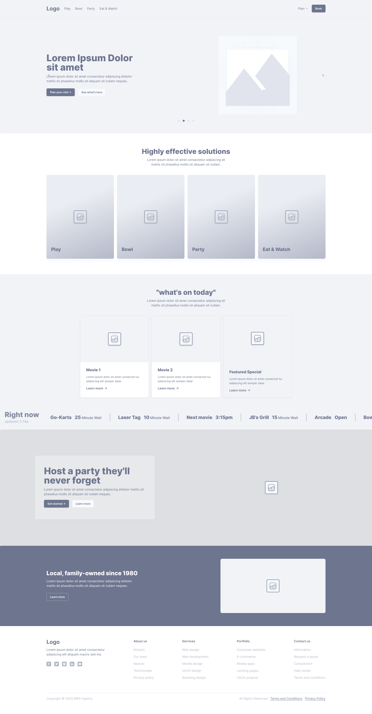
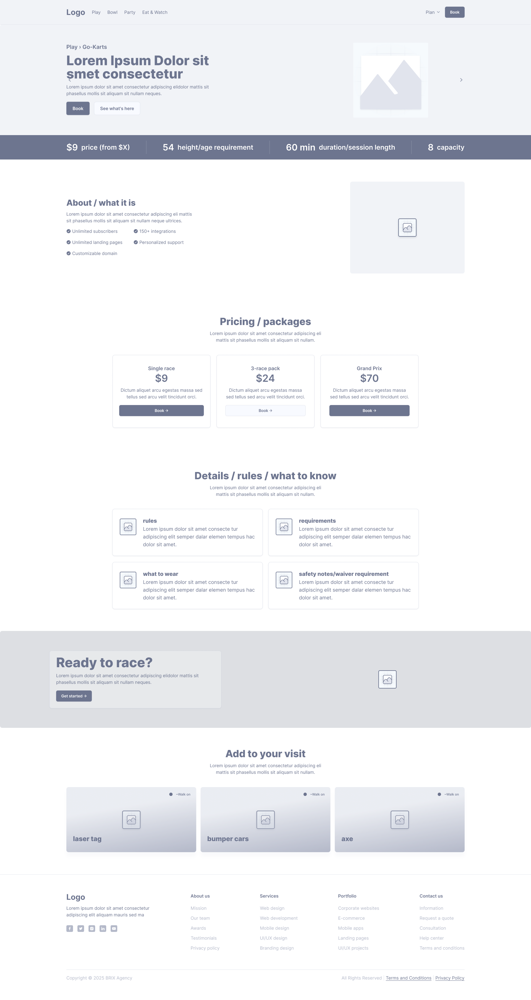
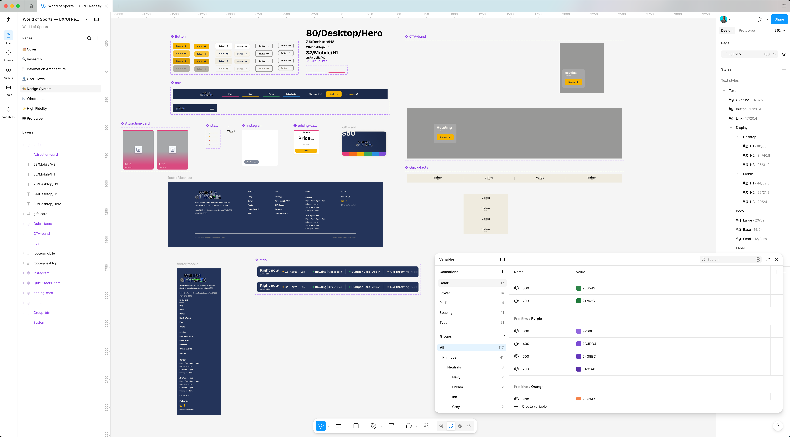
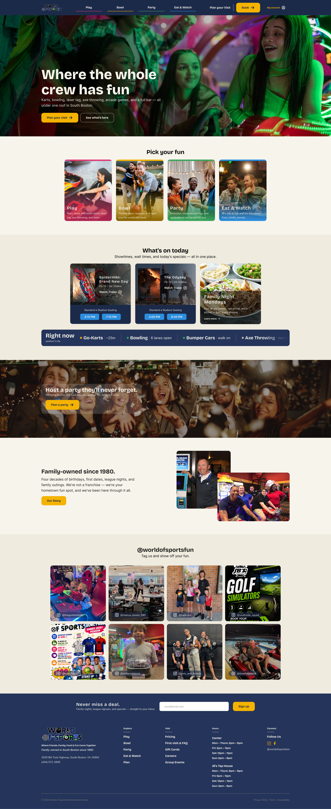
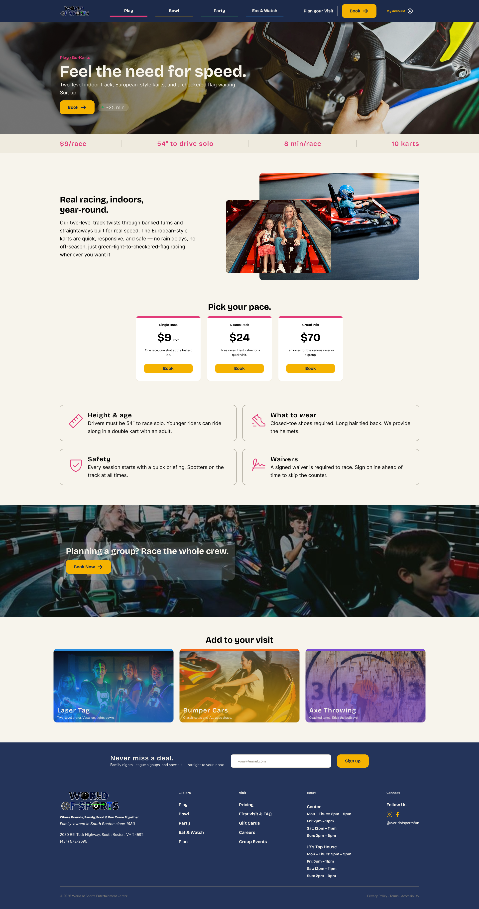
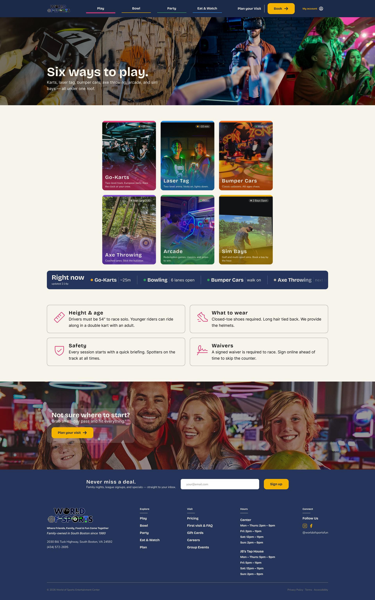
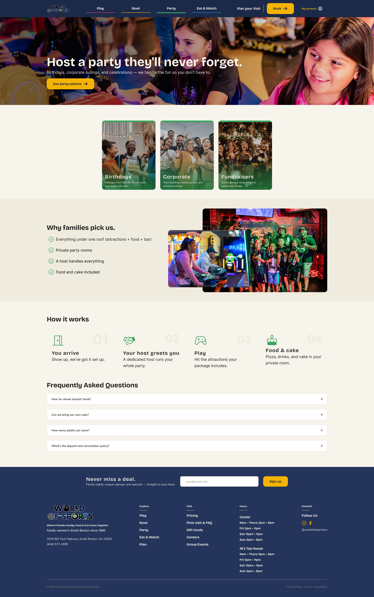
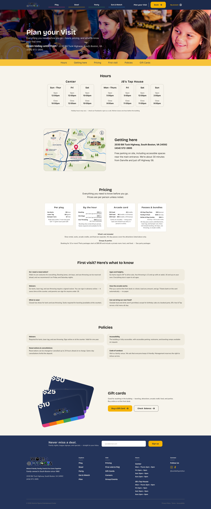

This is a self-initiated concept project. It is not affiliated with or
endorsed by World of Sports. Pricing, hours, and some imagery are
illustrative placeholders.
UX/UI Redesign · 2026 · Self-Initiated
World of Sports
A self-initiated concept redesign of World of Sports — a family-owned
entertainment center in South Boston, Virginia with eleven attractions
under one roof. The project spans the full UX process from competitive
research and information architecture through a token-based design
system and a responsive website across five desktop and five mobile
pages.
Eleven attractions. Zero hierarchy. A venue that undersells
itself.
World of Sports is a genuine local institution — family-owned
since 1980, packing eleven different attractions into a single
South Boston location. But its website badly undersells it.
The
existing site runs on a dated WordPress/Elementor build that
buries the venue's biggest strength — its variety — under flat
navigation and walls of text. For a business whose whole appeal
is "there's something here for everyone," the site makes it hard
to find any one thing.
Before — worldofsportsfun.com
Variety is buried — eleven attractions hidden behind flat
navigation and walls of text
Practical info scattered or missing — prices, height
requirements, durations not surfaced clearly
No information hierarchy — IA organized around an operational
list rather than guest intent
Fragmented, unbranded booking — jumps to third-party system with
no brand continuity
Confusing hours — entertainment center and JB's Axe & Tap hours
not distinguished
Dated, templated presentation — makes a fun, local venue look
generic
Research
Competitive Landscape
Studied regional family entertainment centers and national chains
to understand the category and identify positioning opportunities.
Ryan Family Amusements — regional, strong local trust
Spare Time — mid-tier, decent digital presence
Dave & Buster's — national, energetic, loyalty-forward
Main Event — national, polished, activity-card model
Key insight: National chains lean on a "bright interior" aesthetic
with prominent loyalty integration. The category is saturated with
duotone photo treatments — which I deliberately avoided.
Positioning Thesis
World of Sports occupies a defensible middle ground that national
chains can't replicate.
All-ages, everything-under-one-roof venue
Genuine local warmth and family-owned character
Family-owned since 1980 — real community roots
Goal: lift the polish (dated-local to national-slick) without
losing the authenticity
The redesign's job was to make World of Sports look as good as the
chains — while keeping what the chains can't replicate.
Operational Constraints
Two fixed third-party systems were designed around rather than
replaced — a feasibility-aware decision throughout.
CenterEdge — booking, waivers, showtimes
pfestore — arcade cards
Both treated as fixed handoff points
Focus on everything the brand actually controls
Mapping handoffs became the backbone of the user flows
Designing around constraints, not pretending they don't exist,
keeps the redesign grounded in what the venue could realistically
ship.
Information Architecture
The original site organized around an operational model — a flat
list of attractions with no hierarchy. I restructured it around
guest intent. Everything a guest can do maps to one of four
questions.
Despite being a lane-rental attraction operationally similar
to bowling, guests think of axe throwing as an activity — so
it's grouped by intent, not operational model.
Bowl earns its own top-level section
As a recurring-community destination (leagues, standings,
youth programs, pro shop), bowling is structurally different
from a one-off activity and warrants its own nav section.
A utility bar that earned its way out
An initial persistent utility bar (booking, wait times,
showtimes, account) proved redundant through the process — its
functions redistributed to where guests actually look. A
simpler, less cluttered structure emerged.
Plan as a fifth neutral section
Practical reference information — hours, pricing, FAQs,
directions — lives in a dedicated Plan section, separate from
the intent-based navigation.
Four user flows documented
Booking a lane, booking a birthday, checking a movie, and
reloading an arcade card — each mapping how guests move
between the WoS-designed experience and the fixed third-party
systems.
Wireframes
Working structure-before-skin, five desktop templates were built in
grayscale before touching any visual design: Homepage, Attraction
Detail, Group Landing, Party Hub, and Plan. The most-reused template
— Attraction Detail — drove the key layout decisions.


01
Quick-Facts Strip First
Price, height requirement, duration, and capacity placed
immediately under the hero on every attraction detail page —
surfacing practical info instantly rather than burying it in
prose.
02
Flexible Optional Modules
The Attraction Detail template handles eleven very different
attractions via optional modules rather than a rigid one-size
shape — some with height requirements, some with packages, some
walk-up only.
03
Status Ticker Module
A venue-wide "Right now" status strip surfaces live wait times,
lane availability, and showtimes — the amusement-park status board
made concrete, without requiring a native app.
04
Mobile as a System, Not a Shrink
Mobile wasn't designed as a compressed desktop layout — it's the
same system flexing. Type compresses via mobile styles, cards
stack or become swipe carousels, utility functions relocate to
native patterns.
Design System
The Two-Tier Color System
The most distinctive piece — a wayfinding model with two semantic
layers pointing at the same primitive palette. The two tiers never
compete in the same view.
Tier 1 — Group Level (Site Navigation)
Play Pink
Bowl Gold
Party Green
Eat & Watch Blue
Tier 2 — Attraction Level (Inside Play)
Go-Karts Pink
Laser Tag Purple
Bumper Cars Orange
Axe Throwing Red
Arcade Yellow
Sim Bays Teal
Navy reserved for chrome only — nav, footer, ticker widget. Never
fills large content sections. This discipline keeps an energetic,
colorful site from feeling chaotic.
Typography
Display — Bricolage Grotesque
World of Sports
Body — Nunito Sans
Eleven attractions under one roof — warm, readable, and
approachable at every size.
Token Architecture
Three tiers: primitive → semantic → component. Every color in the
design references a token — nothing is hand-typed. 117 color
variables total.
Color variables
117
Components
8
Button variants
24
Desktop pages
5
Mobile pages
5
User flows
4
Components (all token-bound)
Button (24 variants) · Nav · Attraction card · Pricing card ·
Status pill · CTA band · Quick-facts strip · Venue-wide status
ticker — each built with variants and swappable properties so one
component flexes across every context.

High Fidelity
01 / 05 — Homepage
Navy Frame, Color in the Content
The homepage establishes the visual principle immediately:
navy holds the chrome, the four group hues live in the
content. Intent cards use real photography with a thin hue
top-border and a subtle bottom scrim — the photos carry the
energy, the color codes the wayfinding. A family-owned story
section and Instagram wall reinforce the local-not-franchise
positioning.

02 / 05 — Attraction Detail
Practical Info, Instantly Surfaced
The quick-facts strip — price, height requirement, duration,
capacity — sits immediately under the hero, directly solving
the audit's biggest problem. The attraction hue (Tier 2)
appears in the strip and accent elements, making each
attraction visually distinct while staying within the
system.

03 / 05 — Play Landing
Every Attraction, One Entry Point
The Play Landing page is the entry point for every
attraction at World of Sports — go-karts, laser tag, axe
throwing, bumper cars, arcade, and sim bays. Each attraction
is surfaced as a card with its Tier 2 hue, photo, and a
direct link to the full attraction detail page. Guests can
scan everything available in one view befores committing to
anything.

04 / 05 — Party Hub
Birthdays Made Easy
The Party Hub walks prospective birthday planners through
the full decision journey — What's included, how it works,
and a clear path to booking. Individual package detail lives
on dedicated package pages rather than a comparison grid —
keeping the hub focused and the decision simple. Booking
hands off cleanly to CenterEdge with a branded transition
moment.

05 / 05 — Plan
Everything a Guest Needs Before They Arrive
The Plan page is a practical reference hub — hours
(entertainment center and JB's Axe & Tap separately),
pricing by attraction, FAQs, and directions. The Right Now
ticker appears here surfacing live wait times and lane
availability. Hours for both venues are clearly
distinguished, directly solving the original site's most
confusing feature.

Results
Problem → Solution
Problems identified and solutions designed
Eleven attractions buried in flat navigation
Intent-based IA and quick-facts-first attraction template
put variety and practical details front and center
No information hierarchy
Four-intent model (Play / Bowl / Party / Eat & Watch)
restructures the site around what guests are trying to do
Fragmented, unbranded booking
CenterEdge and pfestore mapped as fixed handoff points —
designed around, not replaced
Confusing hours for two venues
Plan page clearly distinguishes entertainment center hours
from JB's Axe & Tap hours
Dated, templated presentation
Real photography over duotone; navy frame keeps energetic
color system ordered, not chaotic
No live operational info
Right Now ticker surfaces wait times, lane availability, and
showtimes via CenterEdge API
What Was Delivered
Five desktop + five mobile high fidelity pages
117 color variables across three token tiers
Eight token-bound components with variants
Two-tier color wayfinding system — group level and attraction
level
Four documented user flows mapping WoS and third-party handoffs
Interactive Figma prototype with auto-scrolling status ticker
Full sitemap and navigation model
Reflection
Design around constraints, not past them
The most valuable constraint was designing around CenterEdge and
pfestore rather than pretending they could be replaced. It
forced feasibility-aware decisions throughout — the ticker, the
booking flow, the arcade-card reload — and kept the redesign
grounded in what the venue could realistically ship. Constraints
are creative fuel when you accept them early.
A scope decision I stand behind
The project was initially scoped to include a companion app.
Through the process I concluded a native app wasn't warranted —
app adoption depends on visit frequency a local,
occasional-visit FEC simply doesn't have. The Right Now ticker
delivers the core on-site utility value with zero install
friction. Right-sizing the solution to the venue's actual scale
mattered more than adding an impressive-looking artifact.
Structure before skin pays off at the end
Building the responsive tokens, the two-tier color logic, and
the flexible components up front meant the mobile reflow became
a matter of the system flexing rather than redesigning from
scratch. Slow at the start, fast at the end — and consistent
throughout. The design system was the project.
If I took this further
Commissioned photography of the actual venue would be the single
biggest upgrade for the local-not-franchise positioning. A full
build-out of the Party subpages, live data integration for the
status ticker via CenterEdge's API, and WCAG-compliant
pause-on-interaction for the ticker animation would round out a
production-ready build.
Final Thought
World of Sports is a genuinely great local venue hiding behind a
website that doesn't do it justice. Eleven attractions, family-owned
since 1980, a bar, cinemas, and
something for everyone — all of it was there. It just
needed a design system, an intent-based structure, and someone
willing to make it look as good as it actually is.